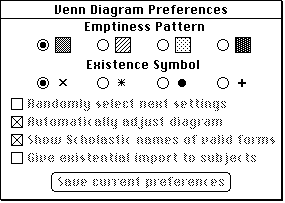

Handling Window Events
Your application must be prepared to handle two kinds of window-related events:Because Venn Diagrammer does not support text entry, the only relevant keyboard events it needs to handle are keyboard equivalents of menu commands. See the chapter "Menus" in this book for a description of how to handle those events.
- mouse and keyboard events in your application's windows, which are reported by the Event Manager in direct response to user actions
- activate and update events, which are generated by the Window Manager and the Event Manager as an indirect result of user actions
This section shows how to handle mouse events as well as update and activate events.
Mouse Events
When your application is active, it receives notice of all mouse-down events in the menu bar, in one of its windows, or in any windows belonging to desk accessories that were launched in its partition. When it receives a mouse-down event, your application should callFindWindowto determine where the cursor was when the mouse button was pressed. TheFindWindowfunction returns a part code that indicates the location of the cursor. These constants define the available part codes:CONST inDesk = 0; {none of the following} inMenuBar = 1; {in menu bar} inSysWindow = 2; {in desk accessory window} inContent = 3; {anywhere in content region except size } { box if window is active, } { anywhere including size box if window } { is inactive} inDrag = 4; {in drag (title bar) region} inGrow = 5; {in size box (active window only)} inGoAway = 6; {in close box} inZoomIn = 7; {in zoom box (window in standard state)} inZoomOut = 8; {in zoom box (window in user state)}In addition to returning a part code as its function result,FindWindowalso returns in its second parameter a pointer to a window, if the user presses the mouse button while the cursor is in a window. Listing 6-7 show how the Venn Diagrammer application handles mouse-down events.Listing 6-7 Handling mouse-down events
PROCEDURE DoMouseDown (myEvent: EventRecord); VAR myPart: Integer; myWindow: WindowPtr; BEGIN myPart := FindWindow(myEvent.where, myWindow); CASE myPart OF inMenuBar: BEGIN DoMenuAdjust; DoMenuCommand(MenuSelect(myEvent.where)); END; InSysWindow: SystemClick(myEvent, myWindow); inDrag: DoDrag(myWindow, myEvent.where); inGoAway: DoGoAwayBox(myWindow, myEvent.where); inContent: BEGIN IF myWindow <> FrontWindow THEN SelectWindow(myWindow) ELSE DoContentClick(myWindow, myEvent); END; OTHERWISE ; END; END;If the user clicks in the menu bar,DoMouseDownadjusts the menus and calls the application-defined routineDoMenuCommandto handle whatever menu command the user might choose. See the chapter "Menus" in this book for details on handling menu choices.The
FindWindowfunction returns the part codeinSysWindowonly when the user presses the mouse button while the cursor is in a window that belongs to a desk accessory launched in your application's partition. You can then call theSystemClickprocedure, passing it the event record and window pointer. TheSystemClickprocedure makes sure that the event is handled by the appropriate desk accessory. For more information aboutSystemClick, see the chapter "Event Manager" in Inside Macintosh: Macintosh Toolbox Essentials.If the user clicks in a window's drag region (identified by the part code
inDrag),DoMouseDowncalls the application-defined routineDoDrag, defined in Listing 6-8. TheDoDragprocedure calls the Window Manager procedureDragWindow, which displays an outline of the window, moves the outline as long as the user continues to drag the window, and callsMoveWindowto draw the window in its new location when the user releases the mouse button.PROCEDURE DoDrag (myWindow: WindowPtr; mouseloc: Point); VAR dragBounds: Rect; BEGIN dragBounds := GetGrayRgn^^.rgnBBox; DragWindow(myWindow, mouseloc, dragBounds); END;If the user clicks a window's close box (identified by the part codeinGoAway), you can call an application-defined procedure to close that window. See "Closing Windows" beginning on page 128 for a discussion of how to close windows.Finally, the
DoMouseDownprocedure defined in Listing 6-7 handles all user clicks in a window's content region either by selecting the window if it isn't already the frontmost window or by calling the routineDoContentClickdefined in Listing 6-9.Listing 6-9 Handling clicks in a window's content region
PROCEDURE DoContentClick (myWindow: WindowPtr; myEvent: EventRecord); VAR myRect: Rect; {temporary rectangle} count: Integer; BEGIN IF NOT IsAppWindow(myWindow) THEN exit(DoContentClick); {make sure it's a document window} SetPort(myWindow); {set port to our window} GlobalToLocal(myEvent.where); {See if the click is in the tools area.} SetRect(myRect, 0, 0, kToolWd * kNumTools, kToolHt); IF PtInRect(myEvent.where, myRect) THEN BEGIN {if so, determine which tool was clicked} FOR count := 1 TO kNumTools DO BEGIN SetRect(myRect, (count - 1) * kToolWd, 0, count * kToolWd, kToolHt); IF PtInRect(myEvent.where, myRect) THEN Leave; {we found the right tool, so stop looking} END; IF DoTrackRect(myWindow, myRect) THEN DoMenuCommand(BitShift(mVennD, 16) + ((kNumTools + 1) - count)); {handle tools selections} exit(DoContentClick); END; {See if the click is in the status area.} SetRect(myRect, kToolWd * kNumTools, 0, myWindow^.portRect.right, kToolHt); IF PtInRect(myEvent.where, myRect) THEN BEGIN exit(DoContentClick); END; {The click must be in somewhere in the rest of the window.} DoVennClick(myWindow, myEvent.where); END;The general strategy employed in theDoContentClickprocedure is to check each part of the content area that is meaningful to the application and determine whether the mouse click occurred there. ThenDoContentClickreacts appropriately.After setting the current drawing port to the specified window,
DoContentClickcalls theGlobalToLocalprocedure to convert the mouse click location from global coordinates to local coordinates. ThenDoContentClickchecks whether the click occurred in the tools area of the window. If so,DoContentClickhandles the tool selection by invoking the corresponding menu command and then exiting.If the mouse click was in the status area of a window,
DoContentClicksimply exits. Otherwise, the user must have clicked somewhere in the content area below the tools and status area. In that case,DoContentClickcalls the application-defined functionDoVennClickto handle the event.
- Note
- The
DoVennClickfunction is not defined in this book, but it's quite simple. It merely checks whether the click occurred in the figure icons, mood icons, or some part of the overlapping circles and, if so, changes the window's document record accordingly and invalidates any affected part of the screen. A portion of DoVennClick is shown in Listing 6-10.
Update Events
The Event Manager sends your application an update event when part or all of your window's content region needs to be redrawn. Specifically, the Event Manager checks each window's update region every time your application callsWaitNextEventand generates an update event for every window whose update region is not empty.The Window Manager typically triggers update events when the moving and relayering of windows on the screen requires that one or more windows be redrawn. If the user moves a window that covers part of an inactive window, for example, the Window Manager first redraws the window frame. It then adds the newly exposed area to the window's update region, triggering an update event. In response, your application updates the content region.
Your application can also trigger update events itself by manipulating the update region. You can add areas to a window's update region by calling the Window Manager procedures
- Note
- Your application can receive update events when it is in either the foreground or the background. In general, however, it doesn't matter whether your update routine is executed in the foreground or the background.
InvalRect(to add a rectangle to the update region) andInvalRgn(to add an arbitrary region to the update region). For example, when the Venn Diagrammer application detects a mouse click in a figure icon, it reacts as shown in Listing 6-10.Listing 6-10 Handling a click in a figure icon
FOR count := 1 TO 4 DO BEGIN IF PtInRect(myPoint, gFigureRects[count]) THEN IF myHandle^^.figure <> count THEN {new rect differ from prev?} BEGIN InvalRect(gFigureRects[myHandle^^.figure]); myHandle^^.figure := count; InvalRect(gFigureRects[myHandle^^.figure]); InvalRect(gTextBoxes[1]); {invalidate premises} InvalRect(gTextBoxes[2]); DoCalcAnswer(myWindow); {update the current answer} DoStatusText(myWindow, ''); {remove any existing message} END; END;Your general strategy should be to isolate all drawing that occurs in a document window into your application's update routine. Then, within any other routines, you redraw parts of the window, whenever necessary, by invalidating those parts to add them to the window's update region. Listing 6-11 shows the update routine for Venn Diagrammer.Listing 6-11 Handling update events
PROCEDURE DoUpdate (myWindow: WindowPtr); VAR myHandle: MyDocRecHnd; myRect: Rect; {tool rectangle} origPort: GrafPtr; origPen: PenState; count: Integer; BEGIN GetPort(origPort); {remember original drawing port} SetPort(myWindow); BeginUpdate(myWindow); {clear update region} EraseRect(myWindow^.portRect); IF IsAppWindow(myWindow) THEN BEGIN {Draw two lines separating tools area from work area.} GetPenState(origPen); {remember original pen state} PenNormal; {reset pen to normal state} WITH myWindow^ DO BEGIN MoveTo(portRect.left, portRect.top + kToolHt); Line(portRect.right, 0); MoveTo(portRect.left, portRect.top + kToolHt + 2); Line(portRect.right, 0); END; {Redraw the tools area in the window.} FOR count := 1 TO kNumTools DO BEGIN SetRect(myRect, kToolWd * (count - 1), 0, kToolWd * count, kToolHt); DoPlotIcon(myRect, gToolsIcons[count], myWindow, srcCopy); END; {Redraw the status area in the window.} myHandle := MyDocRecHnd(GetWRefCon(myWindow)); DoStatusText(myWindow, myHandle^^.statusText); {Draw the rest of the content region.} DoVennDraw(myWindow); SetPenState(origPen); {restore previous pen state} END; {IF IsAppWindow} EndUpdate(myWindow); SetPort(origPort); {restore original drawing port} END;In response to an update event, your application calls BeginUpdate, draws the window's contents, and then callsEndUpdate. The BeginUpdate procedure limits the visible region to the intersection of the visible region and the update region. Your application can then update either the visible region or the entire content region--because QuickDraw limits drawing to the visible region, only the parts of the window that actually need updating are drawn. TheBeginUpdateprocedure also clears the update region. After you've updated the window, you callEndUpdateto restore the visible region in the graphics port to the full visible region.As you can see in Listing 6-11, the Venn Diagrammer application draws the two lines separating the upper portion of the window's content region and redraws the tools icons. Then it redraws the most recently displayed status message (which it has saved in the window's document record). Finally,
DoUpdatecalls the application-defined routineDoVennDrawto draw the remainder of the content area (the overlapping circles, the figure and mood icons, the term labels on the circles, and the syllogism itself).
- Note
- The
DoVennDrawroutine is not shown in this book, but you've already seen portions of it in the chapter "Drawing" earlier in this book.Activate Events
The window in which the user is currently working is the active window. It's always the frontmost window on the desktop (unless your application supports "floating" windows) and is easily identified by the "racing stripes" in the title bar.Your application activates and deactivates windows in response to activate events, which are generated by the Window Manager to inform your application that a window is becoming active or inactive. Each activate event specifies the window to be changed and the direction of the change (that is, whether it is to be activated or deactivated).
Your application also triggers activate events itself by calling the
SelectWindowprocedure. When it receives a mouse-down event in an inactive window, for example, your application callsSelectWindow, which brings the selected window to the front, removes the highlighting from the previously active window, and adds highlighting to the selected window (see Listing 6-7 on page 120). TheSelectWindowprocedure then generates two activate events: the first one tells your application to deactivate the previously active window; the second, to activate the newly active window.When you receive the event for the previously active window, you need to do whatever is appropriate to make the window's contents appear inactive. Depending on the design of you application, you might need to
When you receive the event for the newly active window, you
- hide the controls and size box
- remove or alter any highlighting of selections in the window
If the newly activated window also needs updating, your application also receives an update event, as described in the previous section, "Update Events."
- draw the controls and size box
- restore the content area as necessary, adding the insertion point in its former location and highlighting any previously highlighted selections
Listing 6-12 illustrates the application-defined procedure
- Note
- A switch to one of your application's windows from a different application is handled through suspend and resume events, not activate events. See the chapter "Processes" in this book for a description of how your application can handle suspend and resume events.
DoActivate, which handles activate events.Listing 6-12 Handling window activations and deactivations
PROCEDURE DoActivate (myWindow: WindowPtr; myModifiers: Integer); VAR myState: Integer; {activation state} myControl: ControlHandle; BEGIN myState := BAnd(myModifiers, activeFlag); IF IsDialogWindow(myWindow) THEN BEGIN myControl := WindowPeek(myWindow)^.controlList; WHILE myControl <> NIL DO BEGIN HiliteControl(myControl, myState + 255 mod 256); myControl := myControl^^.nextControl; END; END; END;TheDoActivateprocedure is passed a window pointer and themodifiersfield from the event record corresponding to the activate event. Themodifiersfield contains a bit (defined by theactiveFlagconstant) that indicates whether the event specifies window activation or deactivation.Notice that
DoActivatedoes nothing to Venn Diagrammer's document windows, because those windows contain no controls, text, or other items whose visual state might depend on the activation state. For document windows belonging to Venn Diagrammer, the Window Manager handles all the necessary activation and deactivation.However, the Preferences dialog box supported by the Venn Diagrammer application does contain controls, so the
- Note
- If your application's document windows contain controls (such as scroll bars), your application does need to activate them appropriately. For more information, see the chapter "Control Manager" in Inside Macintosh: Macintosh Toolbox Essentials.
DoActivateprocedure needs to inactivate those controls when the window is deactivated and then reactivate them when the window is activated. TheDoActivateprocedure checks the window's control list and calls the Control Manager procedureHiliteControlto perform the necessary activation or deactivation. (The head of the window's control list is stored in thecontrolListfield of the window record.) Figure 6-2 shows the Preferences dialog box in its inactive state.Figure 6-2 An inactive window containing controls
